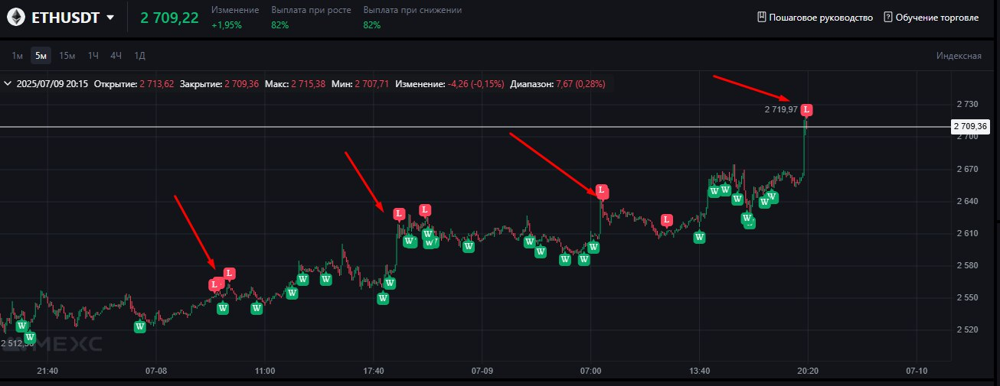
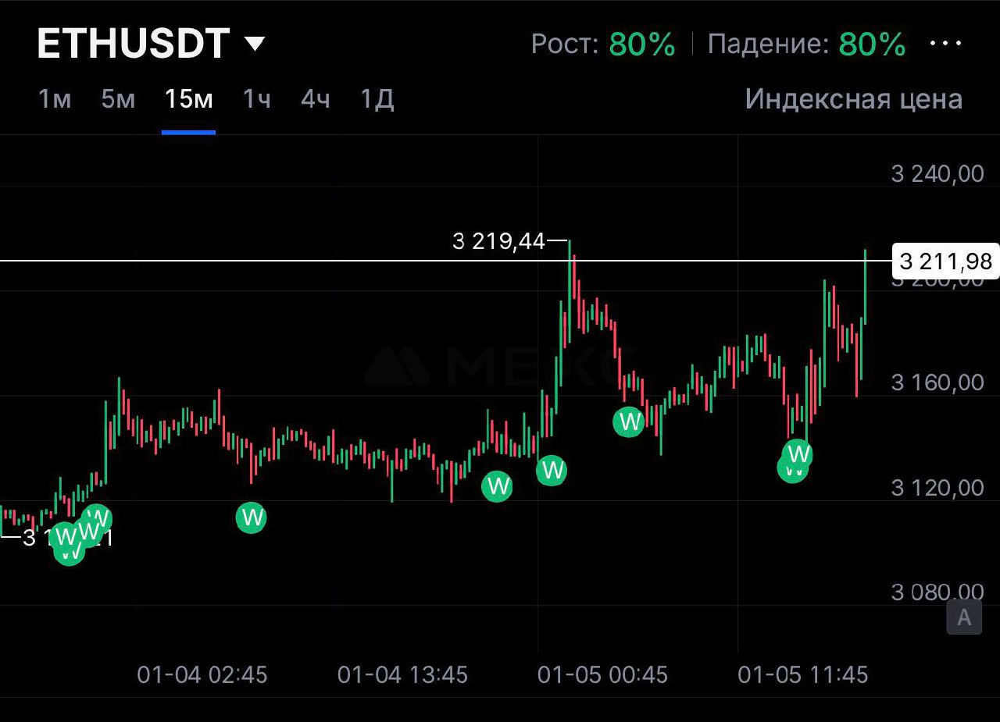
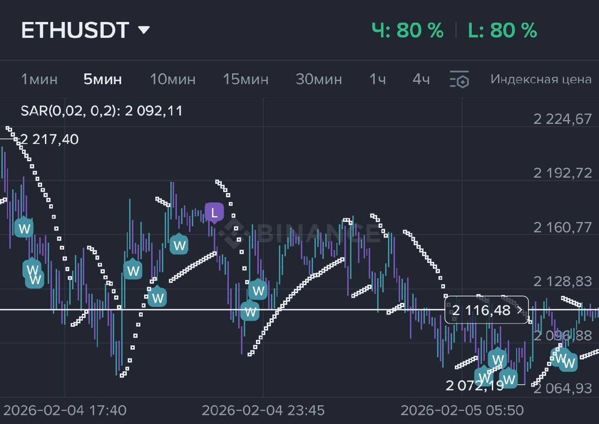

🔴 Важное предупреждение
Стратегия НЕ работает на сильных трендах и импульсах без откатов!
- Цена движется импульсно без откатов
- Происходят сильные безоткатные движения
- Рынок находится в активном тренде
📊 Принципы работы
Где зарабатываем
В боковых движениях (консолидациях)- рынок большую часть времени находится именно здесь
Где теряем
На импульсах и переходах к новым ценовым диапазонам- это наша зона уязвимости
Примеры отработок сигналов:

🎯 Базовые правила
1
Размер позиции: 1–5% от депозита на один сигнал
2
Время входа: оптимально 10 минут
3
Пропускайте вход, если цена ушла импульсом без откатов после сигнала
4
Не заходите на один сигнал 3–4 ставками
5
При получении сигнала войти по «лучшей цене» с откатом
⚠️ Риск-менеджмент
НЕ завышайте риски
НЕ входите в сделку более одного раза на ускорении
Сохраняйте хладнокровие
Держитесь плана
Убытки на импульсах - нормальная часть работы
📋 Чек-лист перед входом
💪 Психология торговли
🎯 Дисциплина важнее прибыли
🛡️ Контроль рисков- основа успеха
⏳ Терпение в боковых движениях окупается
📚 Каждый убыток- цена апгрейда стратегии
🎯 Цель: стабильная прибыль в долгосрочной перспективе, а не быстрые деньги
Примеры успешных серий:

